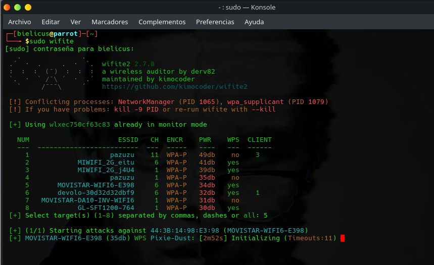

This tool is commonly used for Wi-Fi security auditing and wireless network testing.
ARCH: sudo pacman -S wifite
DEBIAN / UBUNTU: sudo apt install wifite
Wifite is designed for Linux systems. Debian or Ubuntu are recommended.
Command: sudo wifite
It grants administrator privileges required for managing wireless interfaces and performing network analysis tasks.
Command: sudo wifite
After launching Wifite, the program detects compatible wireless adapters and displays information about nearby Wi-Fi networks.
The tool then performs automated wireless security assessment tasks and presents status messages directly in the terminal.
Depending on your hardware, operating system, and testing environment, additional information may be displayed during the analysis process.
Always use wireless auditing tools only on networks that you own or have explicit permission to test.
